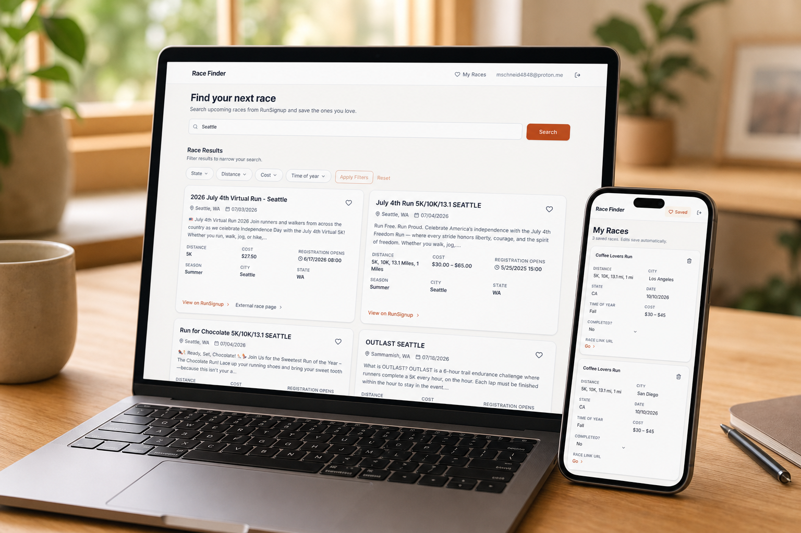
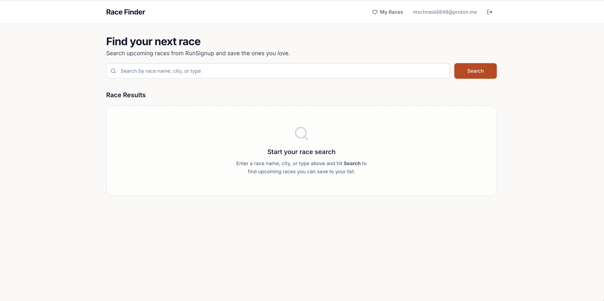
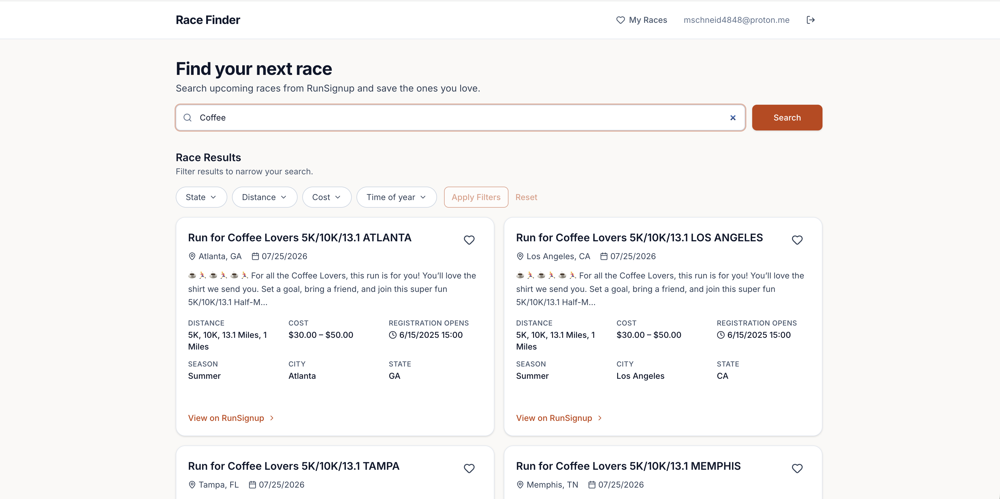
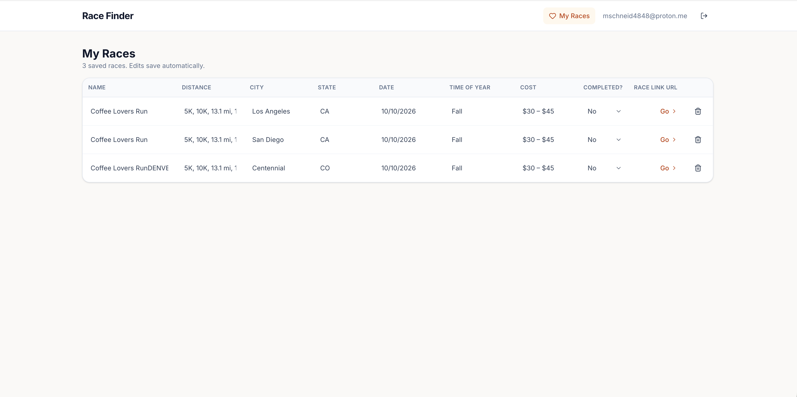

Health and fitness aid
Race
Finder
Race Finder is an app users can use to find, save, and track their races using the RunSignup API.
View live app
Project details
At a glance
Context
Overview
This web app is for users that need help finding races based on their particular criteria, save them for future refrence and training, and mark as complete after they've ran the race.
Challenge
The challenge
Today, users have to do multiple internet searches in order to find a race that meets their needs. From there they have to save it to a spreadsheet and keep track of enrollment dates, costs, and timeline. Users need one place they can go to, to find, save, and track races according to their needs.
How it was built
Process
- Mapped out key user flows
- Incorporated key user flows, site structure, and DESIGN.MD file
- Connected site to RunSignup API
- Accounted for success, error, and loading states
- Iterated appropriately, published, and hosted on Netlify
Response
The solution
With Race Finder, users how have the ability to search, save and track all their races in one easy to access location.
Main screens
User journey



Highlights
Key features
- Search and filter races based on user preference
- Quick access to race details
- Save races for training and tracking purposes
- Web responsive support
Results
Outcomes
A one stop shop for users to manage their race tracking needs.
Looking ahead
Reflection
As part of this work, I learned how to work with and connect APIs along with how to support account creation and storage.